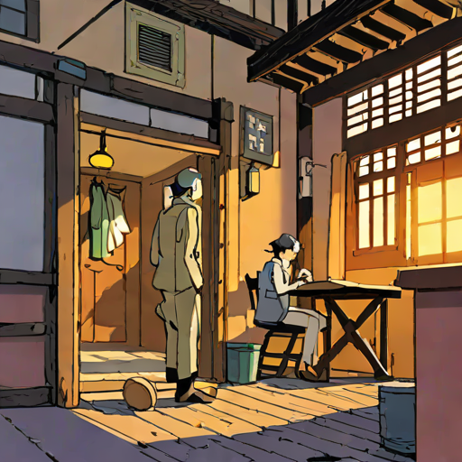

うんこを避けて、彼は部屋の隅に避難した。 Study point: The grammar pattern 〜を避けて、〜する expresses a cause-and-effect relationship, indicating that someone takes action to avoid something. English translation: To avoid the poop, he took shelter in the corner of the room.
